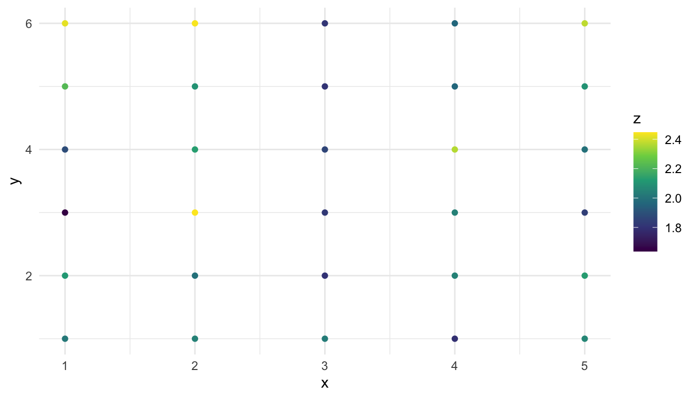
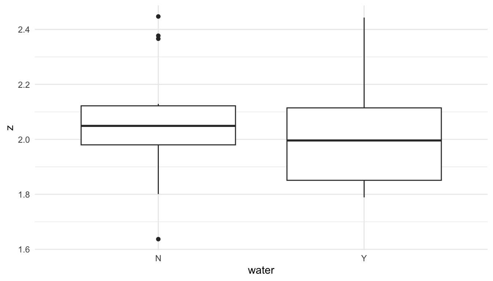
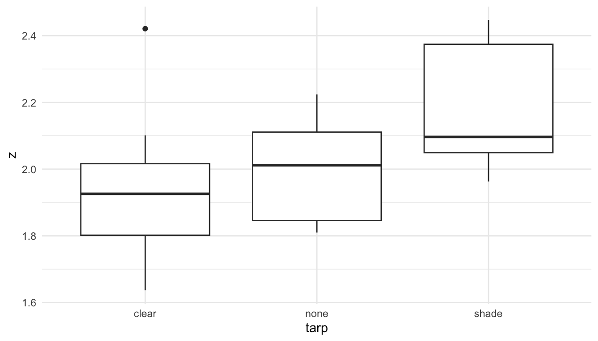
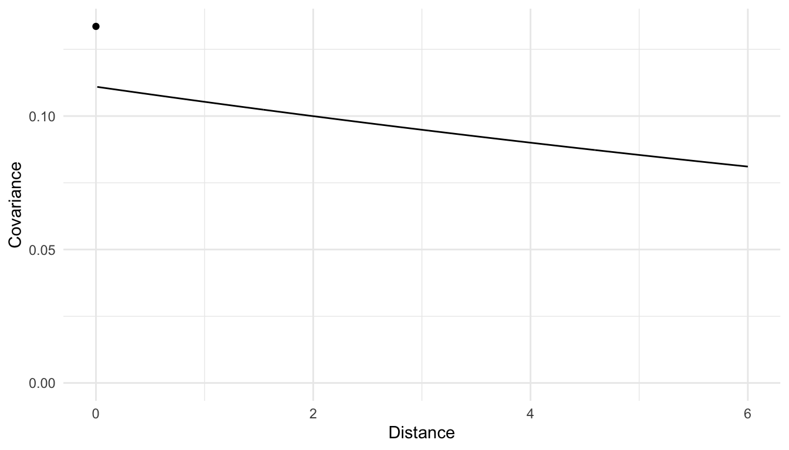
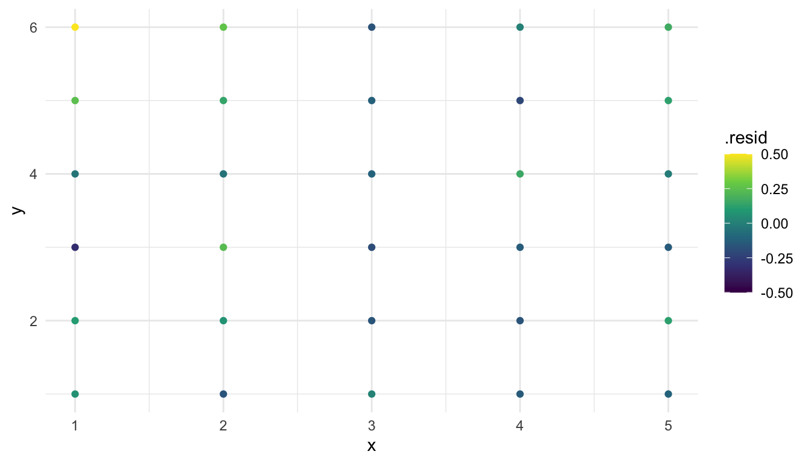

library(spmodel)
library(sf)
library(tidyverse)
library(broom)
theme_set(theme_minimal()) ## set the default theme3 Modeling Point Data
Goals
- Write out the spatial linear model with correlated random errors.
- Using
spmodel’ssplm()function, fit a spatial model to a data set. Using the fitted model, obtain and interpret:- a summary table of model output, obtained with
tidy(). - a summary table of covariance parameter estimates, obtained with
tidy(). - model fit statistics, obtained with
glance()andglances(). - fitted values and residuals, obtained with
augment().
- a summary table of model output, obtained with
Throughout this section, we will use the spmodel, sf, tidyverse, and broom packages:
The purpose of this section is to introduce the spatial linear model for data collected at point locations in space. We begin by fitting a model to the caribou data set in the spmodel package. After we fit such a model with the spmodel package, we more formally discuss the difference between fitting a spatial model and fitting a model with only independent random errors. We then discuss the interpretation of model coefficients, interpretation of spatial covariance parameters, and the interpretation of model fit statistics like AIC.
3.1 Motivation
The caribou data set contains 30 observations from a caribou forage experiment in Alaska. The data, provided by Elizabeth Lenart of the Alaska Department of Fish and Game, is loaded with the spmodel package:
caribou
## # A tibble: 30 × 5
## water tarp z x y
## <fct> <fct> <dbl> <dbl> <dbl>
## 1 Y clear 2.42 1 6
## 2 Y shade 2.44 2 6
## 3 Y none 1.81 3 6
## 4 N clear 1.97 4 6
## 5 N shade 2.38 5 6
## 6 Y none 2.22 1 5
## # ℹ 24 more rowsThe caribou data frame contains the following variables, each collected at a point location in space:
z, the percentage of nitrogen (the response variable for this example)x, the spatial x-coordinatey, the spatial y-coordinatewater, a factor with levelsNfor no water added andYfor water addedtarp, a factor with levelsclearfor a clear tarp,nonefor no tarp, andshadefor a shade tarp
Note that caribou is not an sf object so there is no geometry column. Therefore, we will have to provide the x and y coordinates explicitly when we fit a spatial model or make a plot.
Our analysis goal is to assess whether or not water was added and/or the type of tarp cover added are associated with the percentage of nitrogen measured at the location (z). Before we fit any models, we provide a few quick plots of our data:
ggplot(data = caribou, aes(x = x, y = y)) +
geom_point(aes(colour = z)) +
scale_colour_viridis_c()
We might also construct plots exploring the relationships between water and z as well as nitrogen and z:
ggplot(data = caribou, aes(x = water, y = z)) +
geom_boxplot()
ggplot(data = caribou, aes(x = tarp, y = z)) +
geom_boxplot() 
From these plots, we see that there is some evidence that tarp is associated with nitrogen, as observations with a shade tarp tend to have larger z values than observations with clear and none.
We will fit a spatial linear model with the spmodel package, exploring a few options and interpreting various parameter estimates.
3.2 Fitting a Model
Suppose that we want to fit a model to this data set with z as the response variable and tarp and shade as predictors. We can fit such a model with standard linear regression (assuming independence), or, we can fit a spatial linear model that allows for locations closer in space to have random errors that are positively correlated.
To fit and summarise a model with independent random errors, we can use lm() and then obtain a tidy summary table of output with tidy():
mod_lm <- lm(z ~ water + tarp, data = caribou)
tidy(mod_lm)
## # A tibble: 4 × 5
## term estimate std.error statistic p.value
## <chr> <dbl> <dbl> <dbl> <dbl>
## 1 (Intercept) 1.96 0.0696 28.2 5.27e-21
## 2 waterY -0.0352 0.0696 -0.506 6.17e- 1
## 3 tarpnone 0.0497 0.0853 0.583 5.65e- 1
## 4 tarpshade 0.251 0.0853 2.94 6.76e- 3The output here should look familiar: we see coefficient estimates in the first column, standard errors in the second, and p-values for hypothesis tests that test whether each of the \(\beta\) parameters in the model are different from 0 in the last column. This model assumes that the random error terms are all independent of one another.
To fit and summarise a model with spatially correlated random errors, we can use splm():
mod_splm <- splm(z ~ water + tarp, data = caribou,
xcoord = x, ycoord = y, spcov_type = "exponential")
tidy(mod_splm)
## # A tibble: 4 × 5
## term estimate std.error statistic p.value
## <chr> <dbl> <dbl> <dbl> <dbl>
## 1 (Intercept) 2.05 0.311 6.59 4.33e-11
## 2 waterY -0.0831 0.0645 -1.29 1.98e- 1
## 3 tarpnone 0.0801 0.0776 1.03 3.02e- 1
## 4 tarpshade 0.287 0.0767 3.74 1.86e- 4Note that there are three additional arguments to splm() that are not needed with lm(): the xcoord argument, the ycoord argument, and the spcov_type argument. The xcoord and ycoord arguments need to be specified because we need to tell splm() the columns that have the spatial coordinates (these can be left out if data is an sf object, which stores the coordinate information automatically in the geometry column). The spcov_type tells splm() which spatial covariance/correlation function we would like to use to model covariance on the errors.
Comparing the table of summary output for the independent error model and the spatial model, we see that most of the estimates, standard errors, and p-values are similar. (This is not always the case! Sometimes adding a spatial structure to the random errors yields very different estimates for the \(\beta\) coefficients in the model). But, how can we interpret the results from the spatial model? How does the theoretical underpinning of the spatial model differ from that of the independent error model? And, which model is a better fit to the caribou data?
3.3 Review of the Independent Error Model
Before discussing the theoretical underpinning of the spatial linear model, we first briefly review the linear model with independent random errors. Recall that a linear model with independent errors for the response z with tarp and water as predictors is
\[ Y_i = \beta_0 + \beta_1 tarpnone_i + \beta_2 tarpshade_i + \beta_3 water_i + \epsilon_i, \tag{3.1}\]
where \(i\) goes from \(1, 2, \ldots, n\), \(n\) is the total number of observations in the sample, \(Y_i\) is the random variable for the percent nitrogen of the \(i^{th}\) observation. The terms \(tarpnone_i\), \(tarpshade_i\), and \(water_i\) are indicator variables that take on a 1 if observation \(i\) has no tarp, a 1 if observation \(i\) has a shaded tarp, and a 1 if observation \(i\) has water added, respectively. Importantly, for the independent error model, \(\epsilon_i\), the random error for the \(i^{th}\) observation, has mean 0, constant variance \(\sigma_{ie}^2\), and is independent of all other \(\epsilon_j\). The independence of \(\epsilon_i\) and \(\epsilon_j\) implies that \(\text{Cov}(\epsilon_i, \epsilon_j) = 0\) for all \(i \neq j\).
The model for \(Y_i\) consists of two overarching components: a structure for the mean and a structure for the error.
The mean structure is the part of the model with all of the \(\beta_j\) coefficients: \(\beta_0 + \beta_1 tarpnone_i + \beta_2 tarpshade_i + \beta_3 water_i\). This part of the structure allows \(Y_i\) to have a mean that depends on its predictor values for tarp and water. The error structure of the model is the part of the model with \(\epsilon_i\). When we expand this model into a model that allows for spatial covariance, we will largely leave the mean structure untouched and will only modify the error structure to incorporate spatial covariance.
A model with independent errors needs to estimate 5 total parameters: \(\beta_0\), the intercept, \(\beta_1\), \(\beta_2\), and \(\beta_3\), the slope parameters, and \(\sigma_{ie}^2\), the independent error variance parameter.
We can again use the lm() function to fit and obtain a tidy summary of such a model with the caribou data with
mod_lm <- lm(z ~ water + tarp, data = caribou)
tidy(mod_lm)
## # A tibble: 4 × 5
## term estimate std.error statistic p.value
## <chr> <dbl> <dbl> <dbl> <dbl>
## 1 (Intercept) 1.96 0.0696 28.2 5.27e-21
## 2 waterY -0.0352 0.0696 -0.506 6.17e- 1
## 3 tarpnone 0.0497 0.0853 0.583 5.65e- 1
## 4 tarpshade 0.251 0.0853 2.94 6.76e- 3The five parameter estimates are \(\hat{\beta}_0\) = 1.96, \(\hat{\beta}_1\) = -0.035, \(\hat{\beta}_2\) = 0.05, \(\hat{\beta}_3\) = 0.251, and \(\hat{\sigma}^2_{ie}\) = 0.036.
However, we might expect that, after accounting for the effects of tarp and water, there may be some spatial correlation in the random errors. That is, the assumption that \(\epsilon_i\) is independent of all other \(\epsilon_j\) may be unrealistic. We will compare this independent error model with a spatial model later on in Section 3.6.
3.4 The Spatial Linear Model
A spatial model extends the standard simple linear regression model with a correlated random error term:
\[ Y_i = \beta_0 + \beta_1 tarpnone_i + \beta_2 tarpshade_i + \beta_3 water_i + \epsilon_i + \tau_i, \tag{3.2}\]
where \(\epsilon_i\) is normally distributed with mean 0, variance \(\sigma^2_{ie}\), and \(\epsilon_i\) is independent of \(\epsilon_j\) for all \(i \neq j\). Note that Equation 4.1 is identical to Equation 3.1 except for the very last term \(\tau_i\): we add this term in to slightly modify the error structure of the model while leaving the mean structure as is. This other random error term, \(\tau_i\), is normally distributed with mean 0, variance \(\sigma^2_{de}\), but can have covariance with \(\tau_j\). So, while \(\epsilon_i\) represents independent random error, \(\tau_i\) represents spatailly dependent random error. We then model the covariance of \(\tau_i\) and \(\tau_j\) using a covariance model discussed in Chapter 2. For example, we might use the "exponential" covariance model to model the covariance between \(\tau_i\) and \(\tau_j\):
\[\begin{equation} \text{cov}(\tau_i, \tau_j) = \sigma^2_{de} \text{exp}(\frac{-h_{ij}}{\phi}), \end{equation}\]
where \(h_{ij}\) is the Euclidian distance between the observations at locations \(i\) and \(j\), and \(\phi\) is called the range parameter, which controls the rate of decay of the covariance as a function of distance.
Therefore, with this model, if we assume that all \(\epsilon_i\) are independent of all \(\tau_i\), we have that:
\[ \text{cov}(Y_i, Y_j) = \text{cov}(\epsilon_i, \epsilon_j) + \text{cov}(\tau_i, \tau_j) = \begin{cases} \sigma_{ie}^2 + \sigma_{de}^2 e^{\frac{-h_{ij}}{\phi}}, & h_{ij} = 0\\ \sigma_{de}^2 e^{\frac{-h_{ij}}{\phi}}, & h_{ij} > 0 \end{cases} \]
This is the same model that we used at the end of Chapter 2: we are now just using this model on the random errors of a linear regression model and allowing the \(Y_i\)’s to have different means that depend on the mean structure of the model.
A spatial model with the exponential covariance function estimates 7 total parameters:
- \(\beta_0\), the intercept, and \(\beta_1\), \(\beta_2\), and \(\beta_3\), the slope parameters
- \(\sigma_{ie}^2\), the independent variance parameter, \(\sigma^2_{de}\), the spatially dependent variance parameter, and \(\phi\), the range parameter.
Recall that, in the spatial model, \(\sigma_{ie}^2\) is sometimes referred to as the nugget, \(\sigma^2_{de}\) is sometimes referred to as the partial sill, and \(\phi\) is sometimes referred to as the range.
We re-fit a spatial linear model and obtain a tidy summary with
mod_splm <- splm(z ~ water + tarp, data = caribou,
spcov_type = "exponential",
xcoord = "x", ycoord = "y")
mod_splm |> tidy()
## # A tibble: 4 × 5
## term estimate std.error statistic p.value
## <chr> <dbl> <dbl> <dbl> <dbl>
## 1 (Intercept) 2.05 0.311 6.59 4.33e-11
## 2 waterY -0.0831 0.0645 -1.29 1.98e- 1
## 3 tarpnone 0.0801 0.0776 1.03 3.02e- 1
## 4 tarpshade 0.287 0.0767 3.74 1.86e- 4What changes about our interpretation of this summary output compared to the model with independent errors? Next, we will interpret some of the estimated model parameters and find and interpret confidence intervals for some of these parameters.
3.5 Interpreting the Spatial Linear Model
Based on the previous output, our fitted spatial linear model is:
\[ \hat{Y}_i = 2.05 - 0.0831 water_i + 0.0801 tarpnone_i + 0.287 tarpshade_i \]
We can find the estimated spatial covariance parameters with:
tidy(mod_splm, effects = "spcov")
## # A tibble: 3 × 3
## term estimate is_known
## <chr> <dbl> <lgl>
## 1 de 0.111 FALSE
## 2 ie 0.0226 FALSE
## 3 range 19.1 FALSETherefore,
\[ \widehat{\text{cov}}(Y_i, Y_j) = \begin{cases} 0.0226 + 0.111 e^{\frac{-h_{ij}}{19.1}}, & h_{ij} = 0\\ 0.111 e^{\frac{-h_{ij}}{19.1}}, & h_{ij} > 0, \end{cases} \]
where \(h_{ij}\) is the distance between locations \(i\) and \(j\). Note that, by default, these parameters are estimated using Restricted Maximum Likelihood (REML). The details of the theory behind REML parameter estimation is beyond the scope of these course materials, but we can think about these parameter estimates as providing the best “fit” to the observed data given the specification of the model.
water_i + tarpnone_i + tarpshade_i
We first focus on interpreting \(\hat{\beta}_0 = 2.05\), \(\hat{\beta}_1 = -0.0831\), \(\hat{\beta}_2 = 0.0801\), and \(\hat{\beta}_3 = 0.287\), the estimated regression coefficients in the spatial linear model. These can be interpreted in a similar way to how the fitted regression coefficients are interpreted in a multiple regression model with independent errors. For example, for the waterY coefficient interpretation of -0.0831, we might say something like:
We expect the average percentage of nitrogen for plots with water added to be 0.0831 percentage points lower than the average percentage of nitrogen for plots with no water added, for a fixed value of tarp.
To interpret the three spatial covariance parameters, we can make a covariance plot that has covariance on the y-axis and distance on the x-axis, just as we did in Chapter 2.

We see from the plot that the model estimates there to be some spatial covariance in the errors of the model for the entire range of distances that are present in the data. We also see that the estimated spatial covariance is slightly higher for locations that are closer together (the smallest non-zero distance in the data is 1 unit) than for locations that are further apart, so, a spatial model seems appropriate.
3.5.1 Inference
In addition to interpreting the fitted model parameters, we can perform inference (confidence intervals and hypothesis tests) on the slope parameters.
As in a regression model with independent random errors, confidence intervals for the slope parameters (as well as the intercept) can be found with:
tidy(mod_splm, conf.int = TRUE, conf.level = 0.95)
## # A tibble: 4 × 7
## term estimate std.error statistic p.value conf.low conf.high
## <chr> <dbl> <dbl> <dbl> <dbl> <dbl> <dbl>
## 1 (Intercept) 2.05 0.311 6.59 4.33e-11 1.44 2.66
## 2 tarpnone 0.0801 0.0776 1.03 3.02e- 1 -0.0720 0.232
## 3 tarpshade 0.287 0.0767 3.74 1.86e- 4 0.136 0.437
## 4 waterY -0.0831 0.0645 -1.29 1.98e- 1 -0.209 0.0433And, these intervals can be interpreted in the same way. For example, to interpret the 95% confidence interval for \(\beta_2\), the slope coefficient for tarpshade, we might say something like:
We are 95% confidence that the average nitrogen percentage for plots with a shade tarp cover is between 0.136 percentage points and 0.437 percentage points higher than the average nitrogen percentage for plots with a clear tarp cover, for a fixed value of water.
We can also make similar interpretations about p-values for hypothesis tests from the fitted model output. For example, the p-value in the tarpshade row tests the hypothesis:
\(H_0: \beta_2 = 0\) vs.
\(H_a: \beta_2 \neq 0\)
With a small p-value of 0.00019, we have strong evidence that the average nitrogen percentage for plots with the shade tarp is different than the average nitrogen percentage for plots with the clear tarp (the reference group), after accounting for the effects of water.
Note however, that the p-values in these hypothesis tests and the confidence intervals for the slope coefficients are asymptotic, meaning that they are only technically valid for very large sample sizes. They should be viewed as only approximate for small sample sizes. Because the caribou data only has 30 observations, the confidence intervals and p-values are only approximations and should be taken with a small grain of salt.
Also note that it is a common misconception that incorporating spatial dependence into the random errors of a model will always result in larger p-values. While this is true for some data sets, it is certainly not always the case. Sometimes, accounting for spatial correlation strengthens the “signal” from the predictors in the model, resulting in smaller p-values for tests of association between predictors and the response, as we see for each of the predictors in the caribou example.
3.6 Comparing Models
Now that we have discussed how to interpret the model parameters in a spatial linear model and how to conduct inference on some of these parameters, we will try to answer the question “is the spatial model a better fit to the data than the independent error model?” Or, put another way, is it necessary to fit a spatial model for this particular data set?
We will approach this question in two ways: we will make a visualization of the model residuals from the independent error model and we will compare the two models directly with a model fit criterion.
First, if a model with independent random errors is sufficient, then we would expect there to be evidence of spatial correlation in the random errors of that model. But, we never actually observe realizations of the random errors. We do, however, observe residuals for a model. Recall that a residual for the \(i^{th}\) observation is defined as:
\[ e_i = y_i - \hat{y}_i, \]
where \(y_i\) is the observed response value for the \(i^{th}\) observation and \(\hat{y}_i\) is the predicted response value for the \(i^{th}\) observation based on the predictor values associated with \(y_i\) and the estimated regression coefficients \(\hat{\beta}_0, \hat{\beta}_1, \ldots\). In the caribou example, for the independent error model,
\[ \hat{y}_i = 1.96 - 0.0352 water_i + 0.0497 tarpnone_i + 0.251 tarpshade_i. \]
If the independent error model is sufficient, then, if we make a plot of the model residuals, we would expect to see very little evidence of spatial correlation.
caribou_r <- caribou |> mutate(.resid = residuals(mod_lm))
ggplot(data = caribou_r, aes(x = x, y = y,
colour = .resid)) +
geom_point() +
scale_colour_viridis_c(limits = c(-0.5, 0.5))
From this plot, we “kind of” see evidence of spatial correlation in the residuals: the points in the upper-left do seem like they have generally higher residuals than the points in the bottom-right. But, with only 30 data points, making this subjective assessment is extremely tough.
An alternative approach is to compare the models more formally using model fit criteria like AIC or AICc. We do not define these explicitly here, but recall that lower AIC and AICc values are generally better. Intuitively, both of these criteria provide a balance between model fit and the number of parameters needed to fit the model. So, if two models provide roughly equal “fit,” the model with fewer parameters will have the lower (and better) AIC and AICc values.
We can also use these model fit criteria to assess the fit of a couple of other covariance functions, like the "gaussian" and the "spherical".
many_mods <- splm(z ~ water + tarp, data = caribou,
xcoord = x, ycoord = y,
spcov_type = c("none", "exponential", "spherical", "gaussian"))
glances(many_mods)
## # A tibble: 4 × 11
## model n p npar value AIC AICc BIC logLik deviance
## <chr> <int> <dbl> <int> <dbl> <dbl> <dbl> <dbl> <dbl> <dbl>
## 1 none 30 4 1 -1.68 0.323 0.466 1.72 0.838 26
## 2 exponential 30 4 3 -5.85 0.150 1.07 4.35 2.92 26.0
## 3 spherical 30 4 3 -5.84 0.155 1.08 4.36 2.92 26.0
## 4 gaussian 30 4 3 -5.69 0.314 1.24 4.52 2.84 26.0
## # ℹ 1 more variable: pseudo.r.squared <dbl>In the code above, spcov_type is a vector of possible covariance functions. Each different covariance function is fit as a model for the errors. Setting spcov_type to "none" tells splm() to not use any spatial covariance and to just fit a regression model with independent random errors. we then use glances() to compare AIC for the fitted models. We see that, while the exponential model has a slightly lower AIC than the others, an independent error model fits almost as well and actually has a lower AICc value.
In this section, we have fit and interpreted a formal spatial model using a data set on caribou as our example. In the next section, we turn our attention to the assumptions we need to make to fit such a model.